The Apple Cellar – Lesespurgeschichte mit Rätselaufgaben auf Englisch (Klasse 6)

Materialpaket Advent und Winter für die 6. Klasse: 7 Lesespurgeschichten mit Rätselaufgaben (Weihnachtsbasar, Saturnalien, Lichterfeste & mehr)

The Quiet Snowy Forest – Lesespurgeschichte mit Rätselaufgaben auf Englisch (Klasse 6)

Christmas Tree Farm – Lesespurgeschichte mit Rätselaufgaben auf Englisch (Klasse 6)
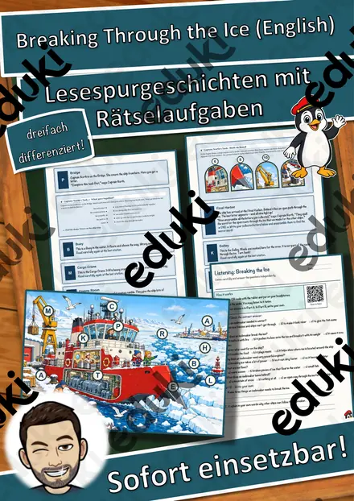
Breaking Through the Ice – Lesespurgeschichte mit Rätselaufgaben auf Englisch (Klasse 6)
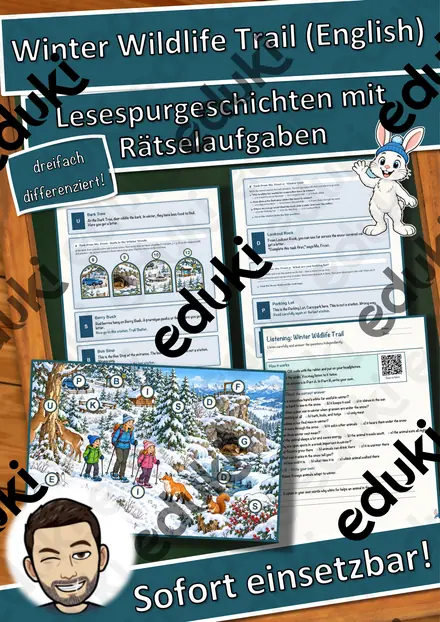
Winter Wildlife Trail – Lesespurgeschichte mit Rätselaufgaben auf Englisch (Klasse 6)

Der Vorlesetag – gut vorlesen, gespannt zuhören – Lesespurgeschichte mit Rätselaufgaben (Klasse 6)

Aschermittwoch und Fastenzeit – vom Fasching bis Ostern – Lesespurgeschichte mit Rätselaufgaben (Klasse 6)
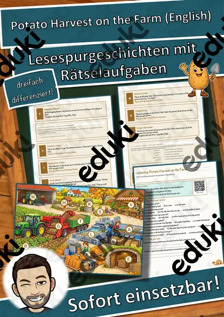
Potato Harvest on the Farm – Lesespurgeschichte mit Rätselaufgaben auf Englisch (Klasse 6)
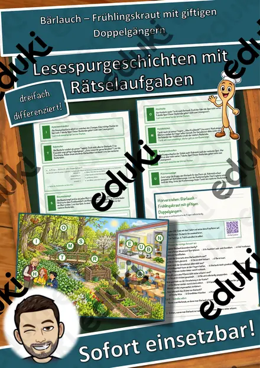
Bärlauch – Frühlingskraut mit giftigen Doppelgängern – Lesespurgeschichte mit Rätselaufgaben (Klasse 6)
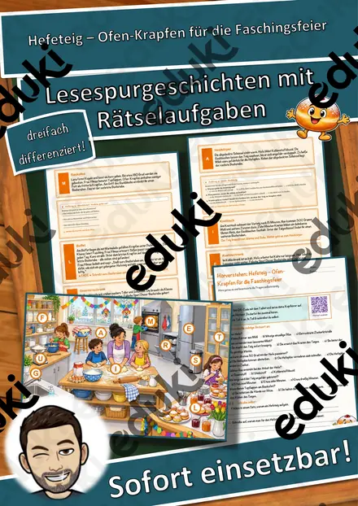
Hefeteig – Ofen-Krapfen für die Faschingsfeier – Lesespurgeschichte mit Rätselaufgaben (Klasse 6)

Die Christrose – eine Blume blüht im Schnee – Lesespurgeschichte mit Rätselaufgaben (Klasse 6)

Der Mann aus dem Eis – ein Gletscherfund aus der Jungsteinzeit – Lesespurgeschichte mit Rätselaufgaben (Klasse 6)
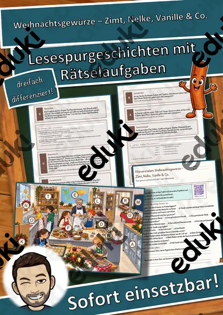
Weihnachtsgewürze – Zimt, Nelke, Vanille & Co. – Lesespurgeschichte mit Rätselaufgaben (Klasse 6)
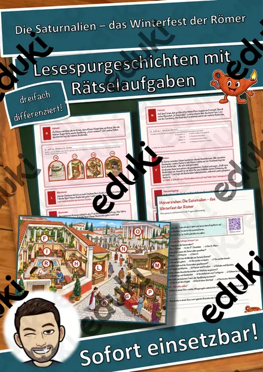
Die Saturnalien – das Winterfest der Römer – Lesespurgeschichte mit Rätselaufgaben (Klasse 6)
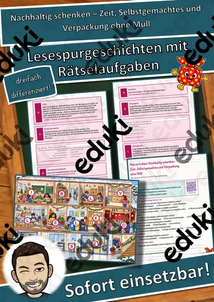
Nachhaltig schenken – Zeit, Selbstgemachtes und Verpackung ohne Müll – Lesespurgeschichte mit Rätselaufgaben (Klasse 6)
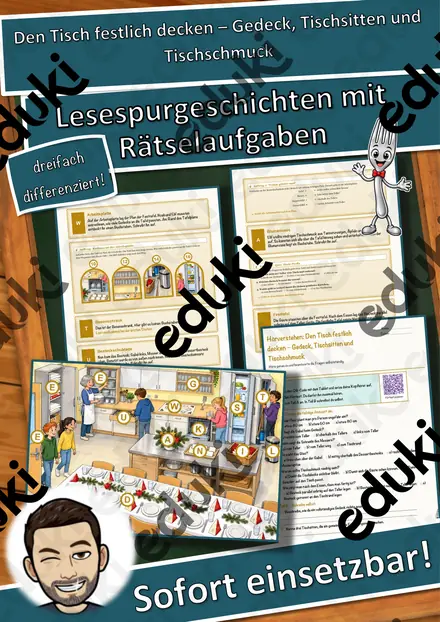
Den Tisch festlich decken – Gedeck, Tischsitten und Tischschmuck – Lesespurgeschichte mit Rätselaufgaben (Klasse 6)

Upcycling – aus Alt mach Neu – Lesespurgeschichte mit Rätselaufgaben (Klasse 6)
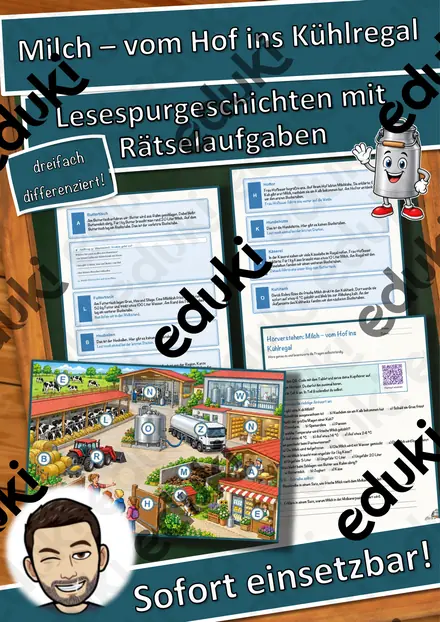
Milch – vom Hof ins Kühlregal – Lesespurgeschichte mit Rätselaufgaben (Klasse 6)

Die Klaviatur – Stammtöne, Halbtöne und Vorzeichen – Lesespurgeschichte mit Rätselaufgaben (Klasse 6)

Holzverbindungen – leimen, nageln, schrauben, dübeln – Lesespurgeschichte mit Rätselaufgaben (Klasse 6)
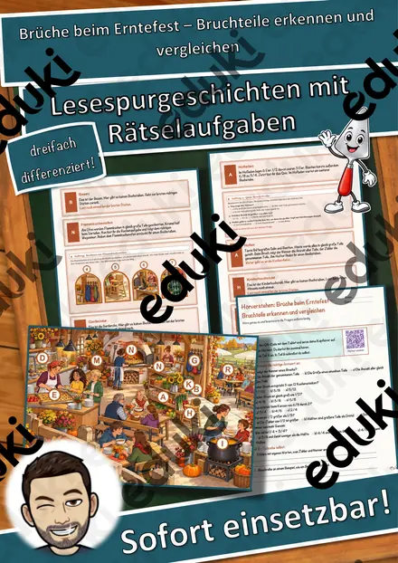
Brüche beim Erntefest – Bruchteile erkennen und vergleichen – Lesespurgeschichte mit Rätselaufgaben (Klasse 6)
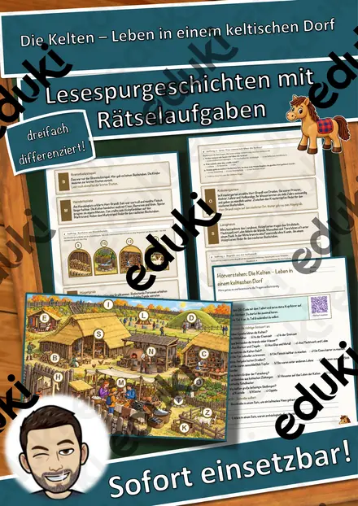
Die Kelten – Leben in einem keltischen Dorf – Lesespurgeschichte mit Rätselaufgaben (Klasse 6)

Sagen – geheimnisvolle Geschichten aus alter Zeit – Lesespurgeschichte mit Rätselaufgaben (Klasse 6)

Was eine Gemeinde alles leistet – von Wasser bis Winterdienst – Lesespurgeschichte mit Rätselaufgaben (Klasse 6)
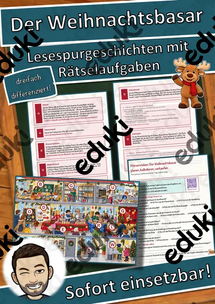
Der Weihnachtsbasar – planen, kalkulieren, verkaufen – Lesespurgeschichte mit Rätselaufgaben (Klasse 6)
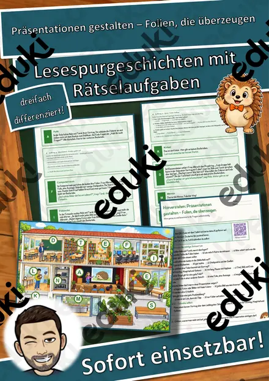
Präsentationen gestalten – Folien, die überzeugen – Lesespurgeschichte mit Rätselaufgaben (Klasse 6)
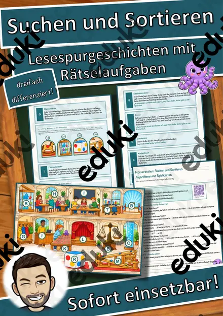
Suchen und Sortieren – Algorithmen mit Spielkarten – Lesespurgeschichte mit Rätselaufgaben (Klasse 6)
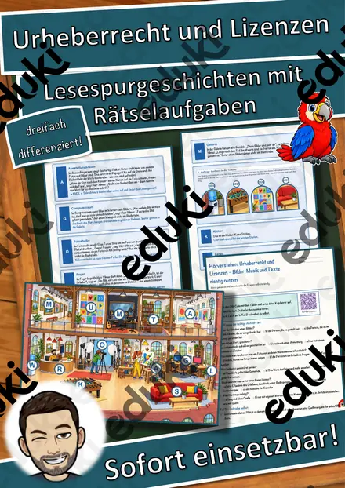
Urheberrecht und Lizenzen – Bilder, Musik und Texte richtig nutzen – Lesespurgeschichte mit Rätselaufgaben (Klasse 6)
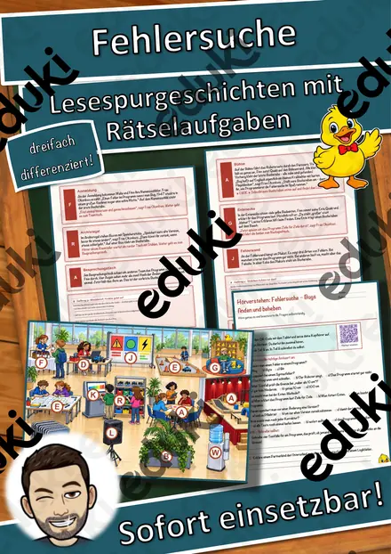
Fehlersuche – Bugs finden und beheben – Lesespurgeschichte mit Rätselaufgaben (Klasse 6)
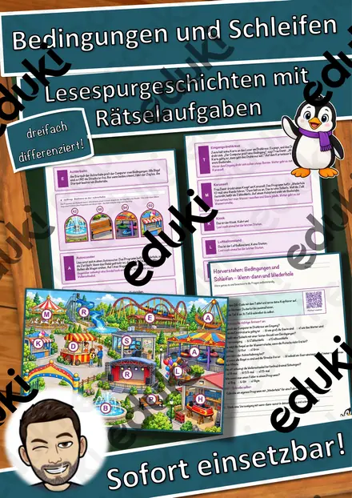
Bedingungen und Schleifen – Wenn-dann und Wiederhole – Lesespurgeschichte mit Rätselaufgaben (Klasse 6)
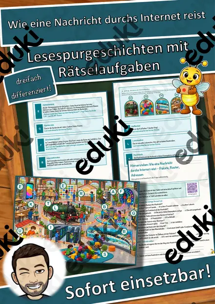
Wie eine Nachricht durchs Internet reist – Pakete, Router, Adressen – Lesespurgeschichte mit Rätselaufgaben (Klasse 6)

Sport früher – Turnvater Jahn und die Spiele der Großeltern – Lesespurgeschichte mit Rätselaufgaben (Klasse 6)

Puls und Atmung beim Sport – was mein Körper mir verrät – Lesespurgeschichte mit Rätselaufgaben (Klasse 6)
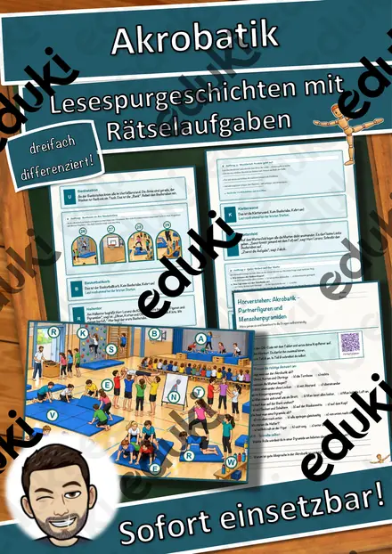
Akrobatik – Partnerfiguren und Menschenpyramiden – Lesespurgeschichte mit Rätselaufgaben (Klasse 6)
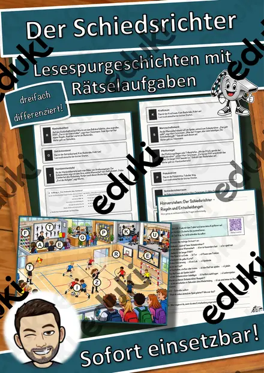
Der Schiedsrichter – Regeln und Entscheidungen – Lesespurgeschichte mit Rätselaufgaben (Klasse 6)
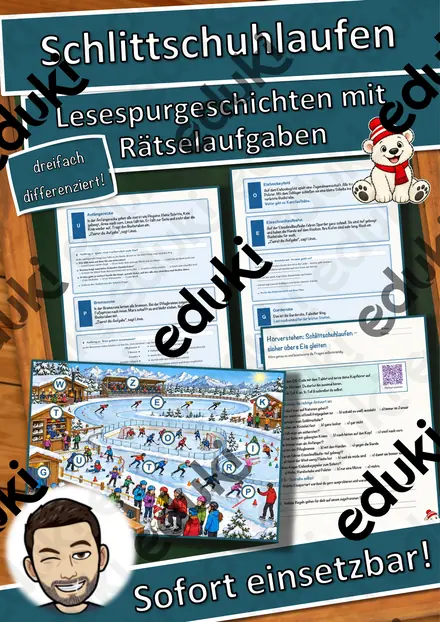
Schlittschuhlaufen – sicher übers Eis gleiten – Lesespurgeschichte mit Rätselaufgaben (Klasse 6)

Lärm, Musik und Gehör – so schützt du deine Ohren – Lesespurgeschichte mit Rätselaufgaben (Klasse 6)
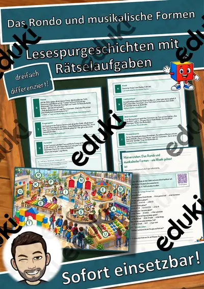
Das Rondo und musikalische Formen – wie Musik gebaut ist – Lesespurgeschichte mit Rätselaufgaben (Klasse 6)
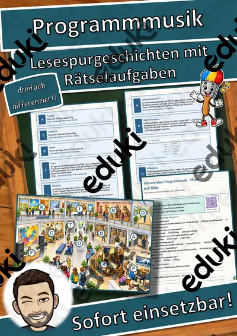
Programmmusik – Musik malt Bilder – Lesespurgeschichte mit Rätselaufgaben (Klasse 6)
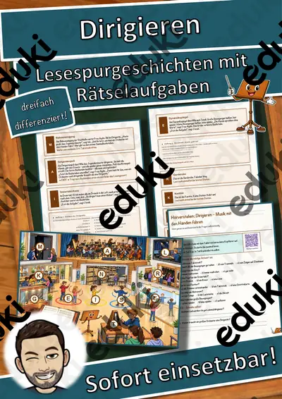
Dirigieren – Musik mit den Händen führen – Lesespurgeschichte mit Rätselaufgaben (Klasse 6)

Die Stimme und der Chor – wie wir singen – Lesespurgeschichte mit Rätselaufgaben (Klasse 6)
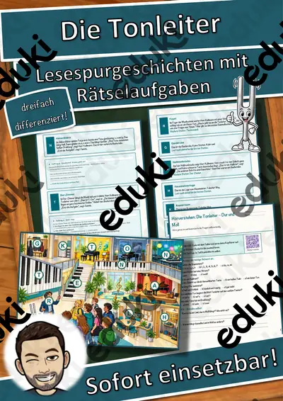
Die Tonleiter – Dur und Moll – Lesespurgeschichte mit Rätselaufgaben (Klasse 6)

Ludwig van Beethoven – Musik gegen die Stille – Lesespurgeschichte mit Rätselaufgaben (Klasse 6)
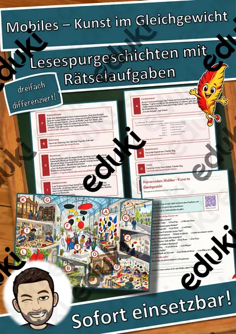
Mobiles – Kunst im Gleichgewicht – Lesespurgeschichte mit Rätselaufgaben (Klasse 6)
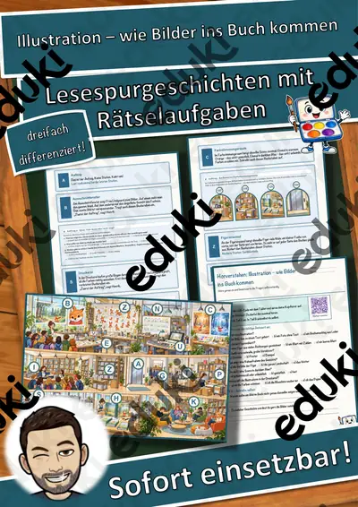
Illustration – wie Bilder ins Buch kommen – Lesespurgeschichte mit Rätselaufgaben (Klasse 6)
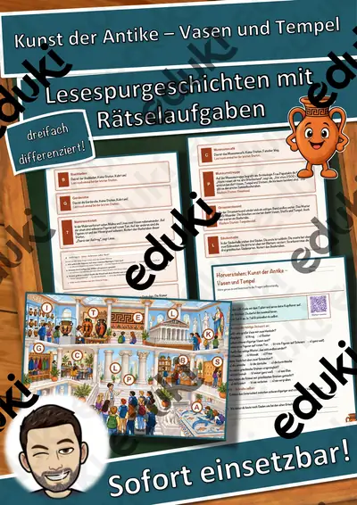
Kunst der Antike – Vasen und Tempel – Lesespurgeschichte mit Rätselaufgaben (Klasse 6)
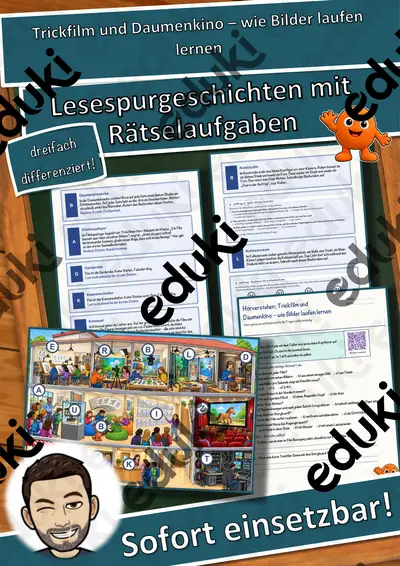
Trickfilm und Daumenkino – wie Bilder laufen lernen – Lesespurgeschichte mit Rätselaufgaben (Klasse 6)
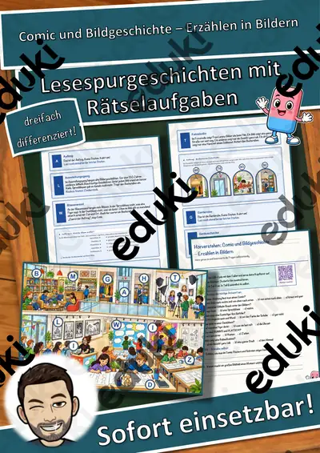
Comic und Bildgeschichte – Erzählen in Bildern – Lesespurgeschichte mit Rätselaufgaben (Klasse 6)
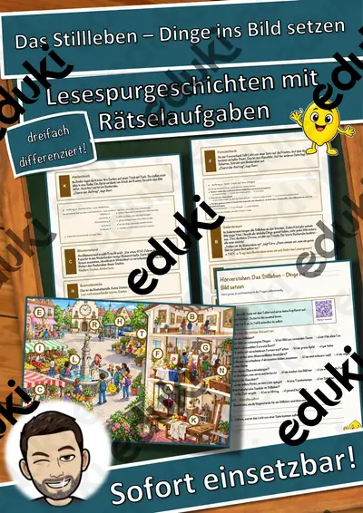
Das Stillleben – Dinge ins Bild setzen – Lesespurgeschichte mit Rätselaufgaben (Klasse 6)
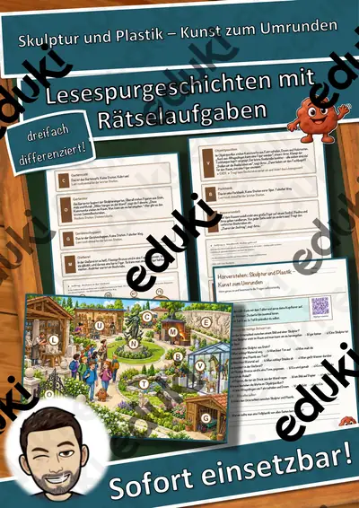
Skulptur und Plastik – Kunst zum Umrunden – Lesespurgeschichte mit Rätselaufgaben (Klasse 6)

Kunst im alten Ägypten – Lesespurgeschichte mit Rätselaufgaben (Klasse 6)
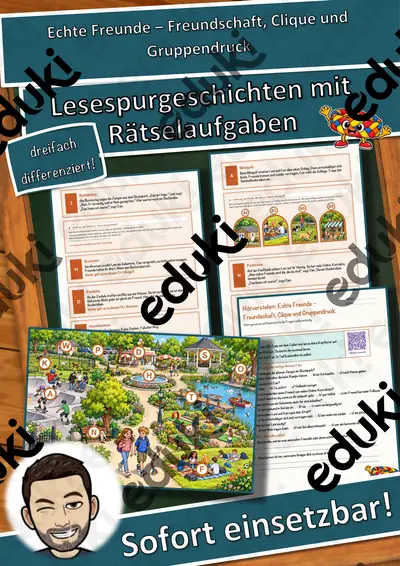
Echte Freunde – Freundschaft, Clique und Gruppendruck – Lesespurgeschichte mit Rätselaufgaben (Klasse 6)
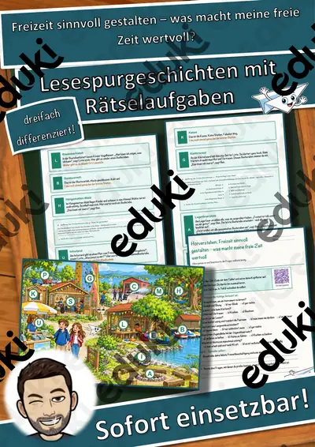
Freizeit sinnvoll gestalten – was macht meine freie Zeit wertvoll? – Lesespurgeschichte mit Rätselaufgaben (Klasse 6)
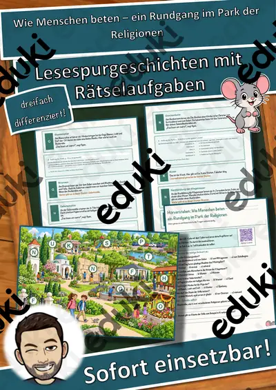
Wie Menschen beten – ein Rundgang im Park der Religionen – Lesespurgeschichte mit Rätselaufgaben (Klasse 6)

Symbole der Weltreligionen – Lesespurgeschichte mit Rätselaufgaben (Klasse 6)
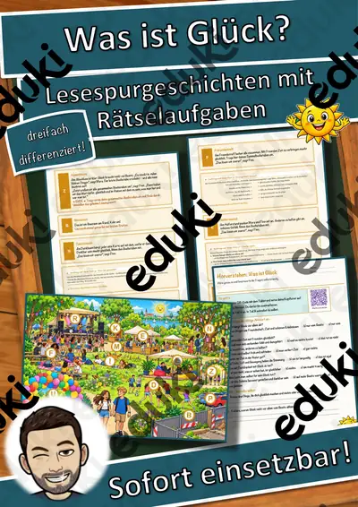
Was ist Glück? – Lesespurgeschichte mit Rätselaufgaben (Klasse 6)

Jeder ist einzigartig – Lesespurgeschichte mit Rätselaufgaben (Klasse 6)
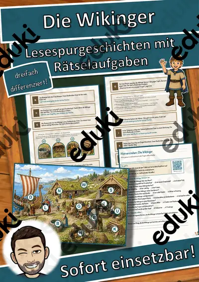
Die Wikinger – Lesespurgeschichte mit Rätselaufgaben (Klasse 6)
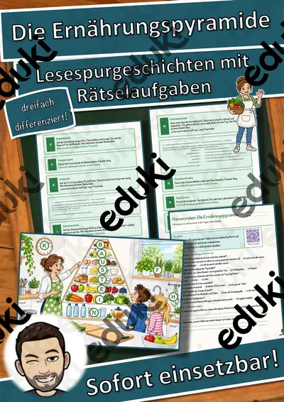
Die Ernährungspyramide – Lesespurgeschichte mit Rätselaufgaben (Klasse 6)
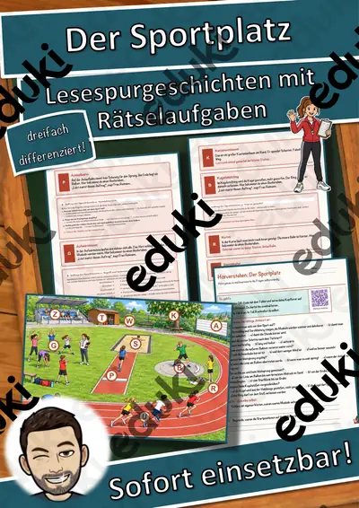
Der Sportplatz – Lesespurgeschichte mit Rätselaufgaben (Klasse 6)
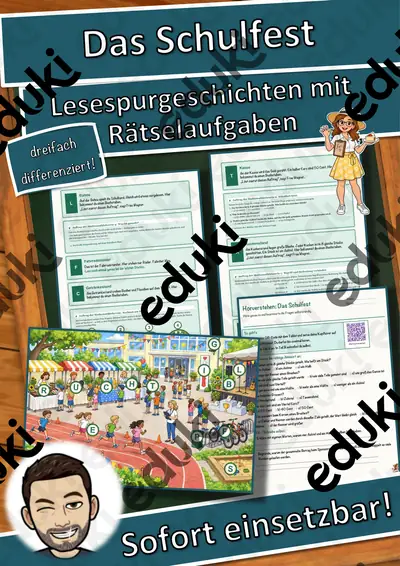
Das Schulfest – Lesespurgeschichte mit Rätselaufgaben (Klasse 6)

Das Blatt – Lesespurgeschichte mit Rätselaufgaben (Klasse 6)

Die Blüte – Lesespurgeschichte mit Rätselaufgaben (Klasse 6)
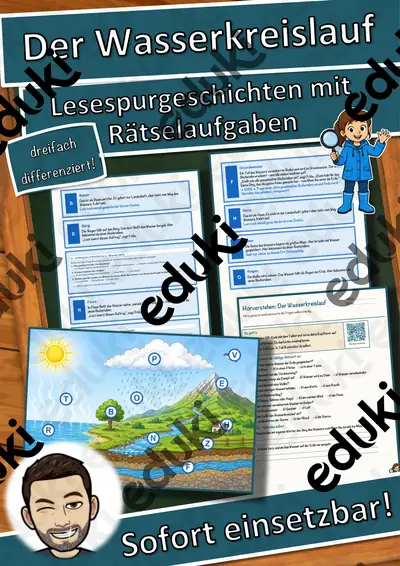
Der Wasserkreislauf – Lesespurgeschichte mit Rätselaufgaben (Klasse 6)
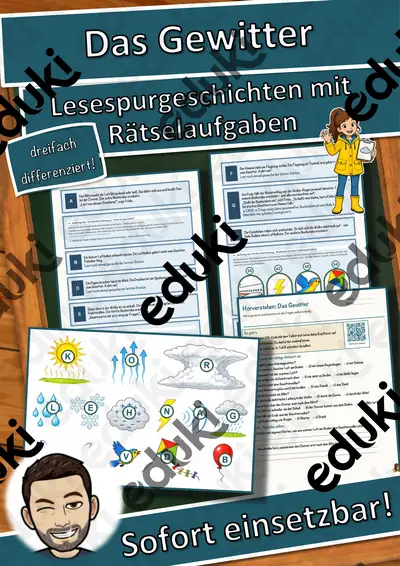
Das Gewitter – Lesespurgeschichte mit Rätselaufgaben (Klasse 6)
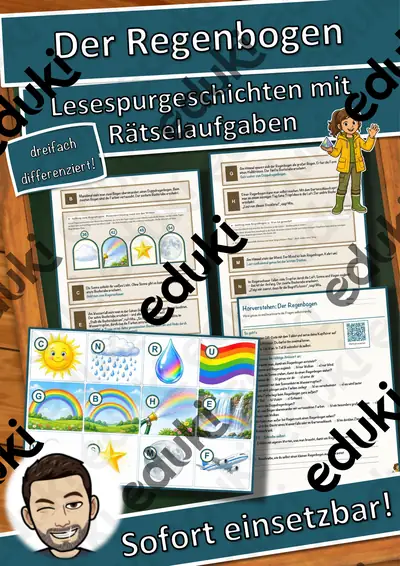
Der Regenbogen – Lesespurgeschichte mit Rätselaufgaben (Klasse 6)

Der Baum – Lesespurgeschichte mit Rätselaufgaben (Klasse 6)

Das Trinkwasser – Lesespurgeschichte mit Rätselaufgaben (Klasse 6)

Der Igel – Lesespurgeschichte mit Rätselaufgaben (Klasse 6)

Der Jugendrat entscheidet – Lesespurgeschichte mit Rätselaufgaben (Klasse 6)

Reise durch das Sonnensystem – Lesespurgeschichte mit Rätselaufgaben (Klasse 6)
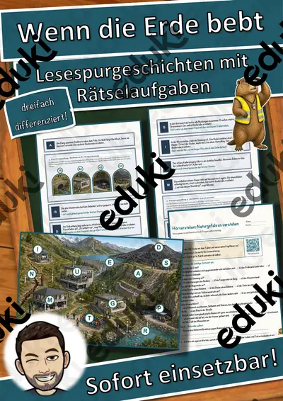
Wenn die Erde bebt – Lesespurgeschichte mit Rätselaufgaben (Klasse 6)
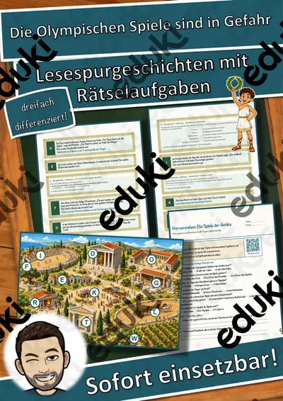
Die Olympischen Spiele sind in Gefahr – Lesespurgeschichte mit Rätselaufgaben (Klasse 6)
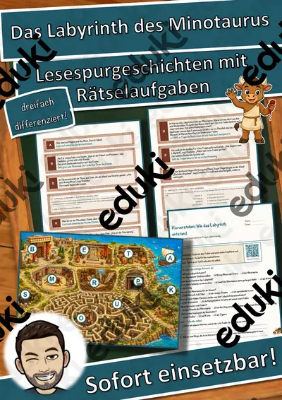
Das Labyrinth des Minotaurus – Lesespurgeschichte mit Rätselaufgaben (Klasse 6)
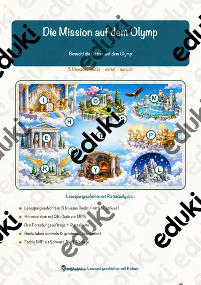
Die Mission auf dem Olymp – Lesespurgeschichte mit Rätselaufgaben (Klasse 6)
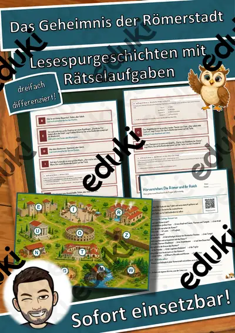
Das Geheimnis der Römerstadt – Lesespurgeschichte mit Rätselaufgaben (Klasse 6)

Das Geheimnis der Ritterburg – Lesespurgeschichte mit Rätselaufgaben (Klasse 6)
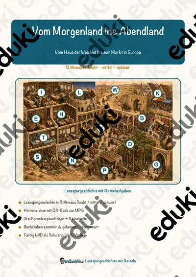
Vom Morgenland ins Abendland – Lesespurgeschichte mit Rätselaufgaben (Klasse 6)
Das weiße Gold – Lesespurgeschichte mit Rätselaufgaben (Klasse 6)
Die Meister der Zunft – Lesespurgeschichte mit Rätselaufgaben (Klasse 6)
Das Reich Karls des Großen – Lesespurgeschichte mit Rätselaufgaben (Klasse 6)

Die Stadt im Mittelalter – Lesespurgeschichte mit Rätselaufgaben (Klasse 6)

Das Kloster im Mittelalter – Lesespurgeschichte mit Rätselaufgaben (Klasse 6)

Waschbrett Lückentext mit Wortspeicher Hörverstehen und Suchsel

Röhrenglocken Lückentext mit Wortspeicher Hörverstehen und Suchsel

Kazoo Lückentext mit Wortspeicher Hörverstehen und Suchsel

Guiro Lückentext mit Wortspeicher Hörverstehen und Suchsel

Gong Lückentext mit Wortspeicher Hörverstehen und Suchsel

Drumcomputer Lückentext mit Wortspeicher Hörverstehen und Suchsel

Claves Lückentext mit Wortspeicher Hörverstehen und Suchsel

Zither Lückentext mit Wortspeicher Hörverstehen und Suchsel

Waldhorn Lückentext mit Wortspeicher Hörverstehen und Suchsel

Vuvuzela Lückentext mit Wortspeicher Hörverstehen und Suchsel

Vibraphon Lückentext mit Wortspeicher Hörverstehen und Suchsel

Triangel Lückentext mit Wortspeicher Hörverstehen und Suchsel

Theremin Lückentext mit Wortspeicher Hörverstehen und Suchsel

Tamtam Lückentext mit Wortspeicher Hörverstehen und Suchsel

Tamburin Lückentext mit Wortspeicher Hörverstehen und Suchsel

Tabla Lückentext mit Wortspeicher Hörverstehen und Suchsel

Synthesizer Lückentext mit Wortspeicher Hörverstehen und Suchsel

Steeldrum Lückentext mit Wortspeicher Hörverstehen und Suchsel

Sousaphon Lückentext mit Wortspeicher Hörverstehen und Suchsel

Sitar Lückentext mit Wortspeicher Hörverstehen und Suchsel

Schellenring Lückentext mit Wortspeicher Hörverstehen und Suchsel

Schellenkranz Lückentext mit Wortspeicher Hörverstehen und Suchsel

Schalmei Lückentext mit Wortspeicher Hörverstehen und Suchsel

Sackpfeife Lückentext mit Wortspeicher Hörverstehen und Suchsel

Röhrentrommel Lückentext mit Wortspeicher Hörverstehen und Suchsel

Rassel Lückentext mit Wortspeicher Hörverstehen und Suchsel

Rahmentrommel Lückentext mit Wortspeicher Hörverstehen und Suchsel

Panflöte Lückentext mit Wortspeicher Hörverstehen und Suchsel

Oud Lückentext mit Wortspeicher Hörverstehen und Suchsel

Okarina Lückentext mit Wortspeicher Hörverstehen und Suchsel

Nyckelharpa Lückentext mit Wortspeicher Hörverstehen und Suchsel

Mundharmonika Lückentext mit Wortspeicher Hörverstehen und Suchsel

Melodica Lückentext mit Wortspeicher Hörverstehen und Suchsel

Maultrommel Lückentext mit Wortspeicher Hörverstehen und Suchsel

Marimba Lückentext mit Wortspeicher Hörverstehen und Suchsel

Maracas Lückentext mit Wortspeicher Hörverstehen und Suchsel

Mandoline Lückentext mit Wortspeicher Hörverstehen und Suchsel

Leier Lückentext mit Wortspeicher Hörverstehen und Suchsel

Laute Lückentext mit Wortspeicher Hörverstehen und Suchsel

Kuhglocke Lückentext mit Wortspeicher Hörverstehen und Suchsel

Koto Lückentext mit Wortspeicher Hörverstehen und Suchsel

Kornett Lückentext mit Wortspeicher Hörverstehen und Suchsel

Konzertina Lückentext mit Wortspeicher Hörverstehen und Suchsel

Klangschale Lückentext mit Wortspeicher Hörverstehen und Suchsel

Kastagnetten Lückentext mit Wortspeicher Hörverstehen und Suchsel

Kalimba Lückentext mit Wortspeicher Hörverstehen und Suchsel

Harmonium Lückentext mit Wortspeicher Hörverstehen und Suchsel

Handpan Lückentext mit Wortspeicher Hörverstehen und Suchsel

Hackbrett Lückentext mit Wortspeicher Hörverstehen und Suchsel

Glockenspiel Lückentext mit Wortspeicher Hörverstehen und Suchsel

Gambe Lückentext mit Wortspeicher Hörverstehen und Suchsel

Flügelhorn Lückentext mit Wortspeicher Hörverstehen und Suchsel

Euphonium Lückentext mit Wortspeicher Hörverstehen und Suchsel

Erhu Lückentext mit Wortspeicher Hörverstehen und Suchsel

E-Gitarre Lückentext mit Wortspeicher Hörverstehen und Suchsel

E-Bass Lückentext mit Wortspeicher Hörverstehen und Suchsel

Drehleier Lückentext mit Wortspeicher Hörverstehen und Suchsel

Djembe Lückentext mit Wortspeicher Hörverstehen und Suchsel

Didgeridoo Lückentext mit Wortspeicher Hörverstehen und Suchsel

Darbuka Lückentext mit Wortspeicher Hörverstehen und Suchsel

Conga Lückentext mit Wortspeicher Hörverstehen und Suchsel

Charango Lückentext mit Wortspeicher Hörverstehen und Suchsel

Cembalo Lückentext mit Wortspeicher Hörverstehen und Suchsel

Celesta Lückentext mit Wortspeicher Hörverstehen und Suchsel

Cajon Lückentext mit Wortspeicher Hörverstehen und Suchsel

Bouzouki Lückentext mit Wortspeicher Hörverstehen und Suchsel

Bongo Lückentext mit Wortspeicher Hörverstehen und Suchsel

Becken Lückentext mit Wortspeicher Hörverstehen und Suchsel

Banjo Lückentext mit Wortspeicher Hörverstehen und Suchsel

Bandoneon Lückentext mit Wortspeicher Hörverstehen und Suchsel

Balalaika Lückentext mit Wortspeicher Hörverstehen und Suchsel

Alphorn Lückentext mit Wortspeicher Hörverstehen und Suchsel

Ukulele Lückentext mit Wortspeicher Hörverstehen und Suchsel

Cadmium Lückentext mit Wortspeicher Hörverstehen und Suchsel

Germanium Lückentext mit Wortspeicher Hörverstehen und Suchsel

Zink Lückentext mit Wortspeicher Hörverstehen und Suchsel

Tenness Lückentext mit Wortspeicher Hörverstehen und Suchsel

Livermorium Lückentext mit Wortspeicher Hörverstehen und Suchsel

Moscovium Lückentext mit Wortspeicher Hörverstehen und Suchsel

Flerovium Lückentext mit Wortspeicher Hörverstehen und Suchsel

Nihonium Lückentext mit Wortspeicher Hörverstehen und Suchsel

Copernicium Lückentext mit Wortspeicher Hörverstehen und Suchsel

Roentgenium Lückentext mit Wortspeicher Hörverstehen und Suchsel

Darmstadtium Lückentext mit Wortspeicher Hörverstehen und Suchsel

Meitnerium Lückentext mit Wortspeicher Hörverstehen und Suchsel

Hassium Lückentext mit Wortspeicher Hörverstehen und Suchsel

Bohrium Lückentext mit Wortspeicher Hörverstehen und Suchsel

Seaborgium Lückentext mit Wortspeicher Hörverstehen und Suchsel

Dubnium Lückentext mit Wortspeicher Hörverstehen und Suchsel

Rutherfordium Lückentext mit Wortspeicher Hörverstehen und Suchsel

Fermium Lückentext mit Wortspeicher Hörverstehen und Suchsel

Lawrencium Lückentext mit Wortspeicher Hörverstehen und Suchsel

Nobelium Lückentext mit Wortspeicher Hörverstehen und Suchsel

Mendelevium Lückentext mit Wortspeicher Hörverstehen und Suchsel

Einsteinium Lückentext mit Wortspeicher Hörverstehen und Suchsel

Californium Lückentext mit Wortspeicher Hörverstehen und Suchsel

Berkelium Lückentext mit Wortspeicher Hörverstehen und Suchsel

Curium Lückentext mit Wortspeicher Hörverstehen und Suchsel

Americium Lückentext mit Wortspeicher Hörverstehen und Suchsel

Plutonium Lückentext mit Wortspeicher Hörverstehen und Suchsel

Rhodium Lückentext mit Wortspeicher Hörverstehen und Suchsel

Molybdän Lückentext mit Wortspeicher Hörverstehen und Suchsel

Promethium Lückentext mit Wortspeicher Hörverstehen und Suchsel

Zirconium Lückentext mit Wortspeicher Hörverstehen und Suchsel

Protactinium Lückentext mit Wortspeicher Hörverstehen und Suchsel

Actinium Lückentext mit Wortspeicher Hörverstehen und Suchsel

Gallium Lückentext mit Wortspeicher Hörverstehen und Suchsel

Francium Lückentext mit Wortspeicher Hörverstehen und Suchsel

Neptunium Lückentext mit Wortspeicher Hörverstehen und Suchsel

Thorium Lückentext mit Wortspeicher Hörverstehen und Suchsel

Radium Lückentext mit Wortspeicher Hörverstehen und Suchsel

Radon Lückentext mit Wortspeicher Hörverstehen und Suchsel

Polonium Lückentext mit Wortspeicher Hörverstehen und Suchsel

Astat Lückentext mit Wortspeicher Hörverstehen und Suchsel

Thallium Lückentext mit Wortspeicher Hörverstehen und Suchsel

Bismut Lückentext mit Wortspeicher Hörverstehen und Suchsel

Platin Lückentext mit Wortspeicher Hörverstehen und Suchsel

Iridium Lückentext mit Wortspeicher Hörverstehen und Suchsel

Osmium Lückentext mit Wortspeicher Hörverstehen und Suchsel

Rhenium Lückentext mit Wortspeicher Hörverstehen und Suchsel

Tantal Lückentext mit Wortspeicher Hörverstehen und Suchsel

Wolfram Lückentext mit Wortspeicher Hörverstehen und Suchsel

Hafnium Lückentext mit Wortspeicher Hörverstehen und Suchsel

Lutetium Lückentext mit Wortspeicher Hörverstehen und Suchsel

Thulium Lückentext mit Wortspeicher Hörverstehen und Suchsel

Ytterbium Lückentext mit Wortspeicher Hörverstehen und Suchsel

Erbium Lückentext mit Wortspeicher Hörverstehen und Suchsel

Dysprosium Lückentext mit Wortspeicher Hörverstehen und Suchsel

Holmium Lückentext mit Wortspeicher Hörverstehen und Suchsel

Terbium Lückentext mit Wortspeicher Hörverstehen und Suchsel

Gadolinium Lückentext mit Wortspeicher Hörverstehen und Suchsel

Europium Lückentext mit Wortspeicher Hörverstehen und Suchsel

Samarium Lückentext mit Wortspeicher Hörverstehen und Suchsel

Neodym Lückentext mit Wortspeicher Hörverstehen und Suchsel

Praseodym Lückentext mit Wortspeicher Hörverstehen und Suchsel

Lanthan Lückentext mit Wortspeicher Hörverstehen und Suchsel

Caesium Lückentext mit Wortspeicher Hörverstehen und Suchsel

Cer Lückentext mit Wortspeicher Hörverstehen und Suchsel

Iod Lückentext mit Wortspeicher Hörverstehen und Suchsel

Barium Lückentext mit Wortspeicher Hörverstehen und Suchsel

Antimon Lückentext mit Wortspeicher Hörverstehen und Suchsel

Indium Lückentext mit Wortspeicher Hörverstehen und Suchsel

Xenon Lückentext mit Wortspeicher Hörverstehen und Suchsel

Tellur Lückentext mit Wortspeicher Hörverstehen und Suchsel

Palladium Lückentext mit Wortspeicher Hörverstehen und Suchsel

Ruthenium Lückentext mit Wortspeicher Hörverstehen und Suchsel

Zinn Lückentext mit Wortspeicher Hörverstehen und Suchsel
Technetium Lückentext mit Wortspeicher Hörverstehen und Suchsel
Niob Lückentext mit Wortspeicher Hörverstehen und Suchsel
Strontium Lückentext mit Wortspeicher Hörverstehen und Suchsel
Yttrium Lückentext mit Wortspeicher Hörverstehen und Suchsel
Krypton Lückentext mit Wortspeicher Hörverstehen und Suchsel
Selen Lückentext mit Wortspeicher Hörverstehen und Suchsel
Rubidium Lückentext mit Wortspeicher Hörverstehen und Suchsel
Brom Lückentext mit Wortspeicher Hörverstehen und Suchsel
Arsen Lückentext mit Wortspeicher Hörverstehen und Suchsel
Keine Materialien gefunden – versuch einen anderen Suchbegriff oder Filter.